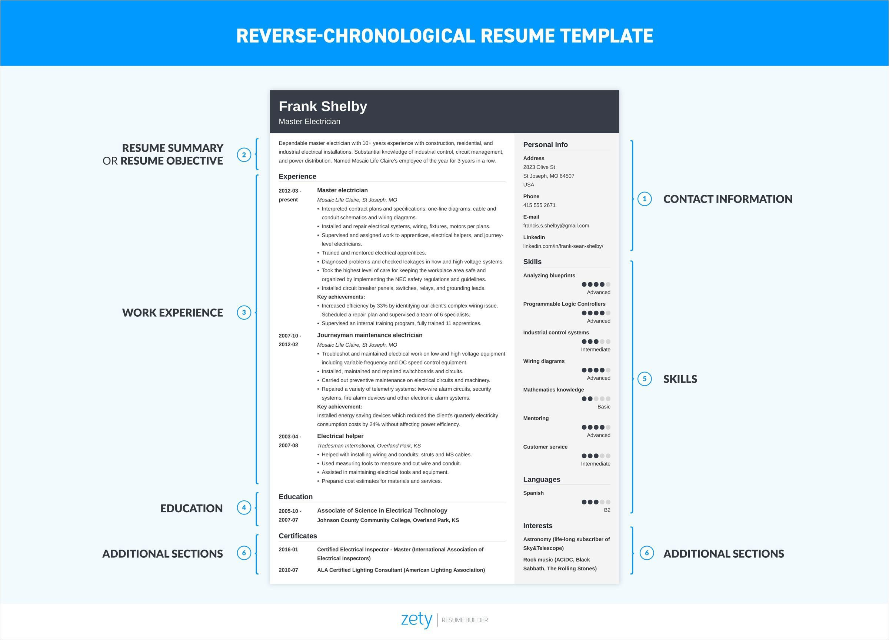
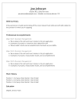
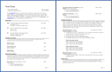
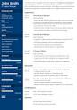
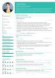
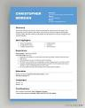

Welcome to Resume Builder Site
Here, You kno how to write resume in an efficient and proper manner
THE FIRST IMPRESSION IS THE LAST IMPRESSION
AND RESUME IS SHOW YOUR IMPRESSION WITH DETAILS OF YOUR CARRER , EXPERIENCE AND DEVELOPEMNT
What is a resume for a job?
A resume (sometimes spelled résumé) is a record of work experience, professional achievements, education, skills, certifications, and other details that make the case for the job. It is usually the first contact between a company and candidate.
Here's a step by step guide on how to create a professional resume:
- Choose the Right Resume Format

- Reverse-chronological format
- Pros: Traditional resume style, familiar to potential employers.
- Cons: Very common, not the most creative resume design format.
- Combination format
- Pros: Great for experienced pros and career changers for highlighting transferable skills.
- Cons: Uncommon, not as familiar, not recommended for entry-level job seekers.
-
You can see different format for how to write resume or build a resume
    